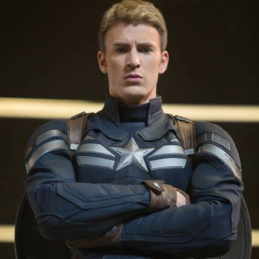
Capitán América / Steve Rogers
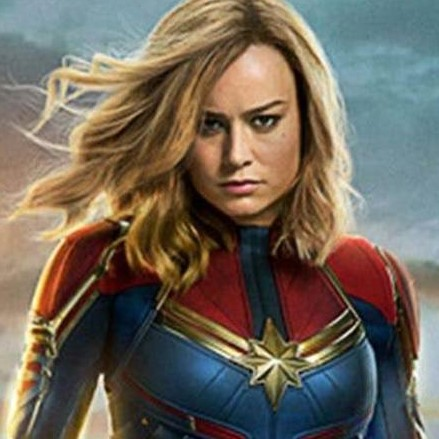
Capitana Marvel / Carol Susan Jane Danvers
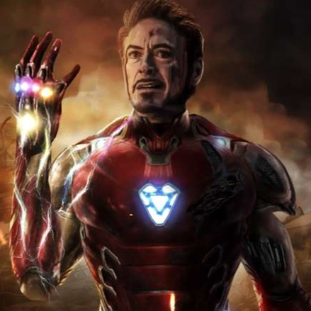
Iron Man / Anthony Edward "Tony" Stark
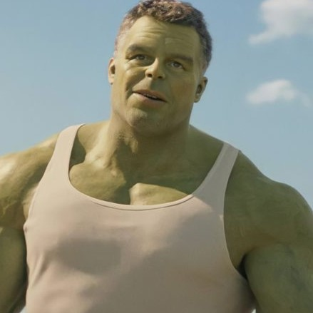
Hulk / Robert Bruce Banner
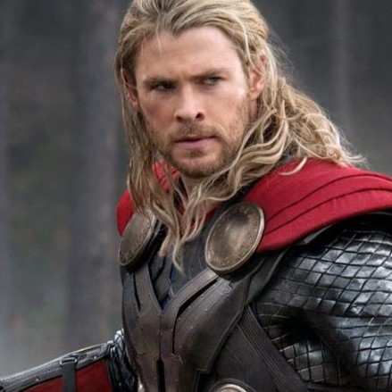
Thor Odinson / El Dios Del Trueno
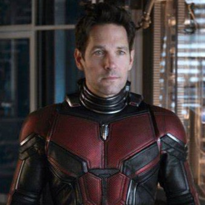
Ant-Man / Scott Edward Harris Lang
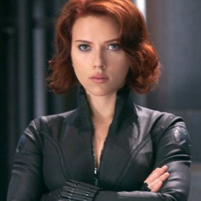
Natalia Alianovna "Natasha" Romanoff / Viuda Negra
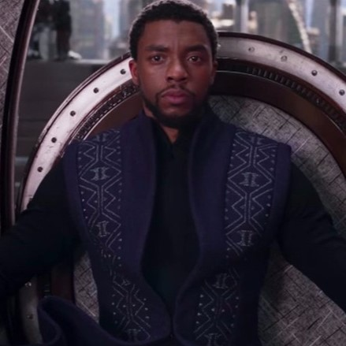
Black Panther / T'Challa
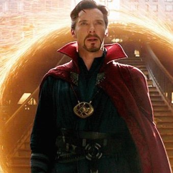
Doctor Stephen Vincent Strange / Doctor Strange
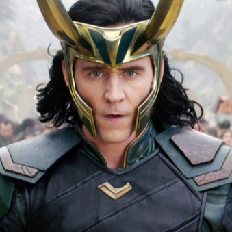
Loki Laufeyson / El Dios De Las Mentiras
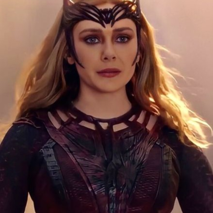
Wanda Maximoff / Bruja Escarlata
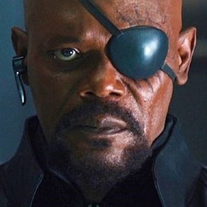